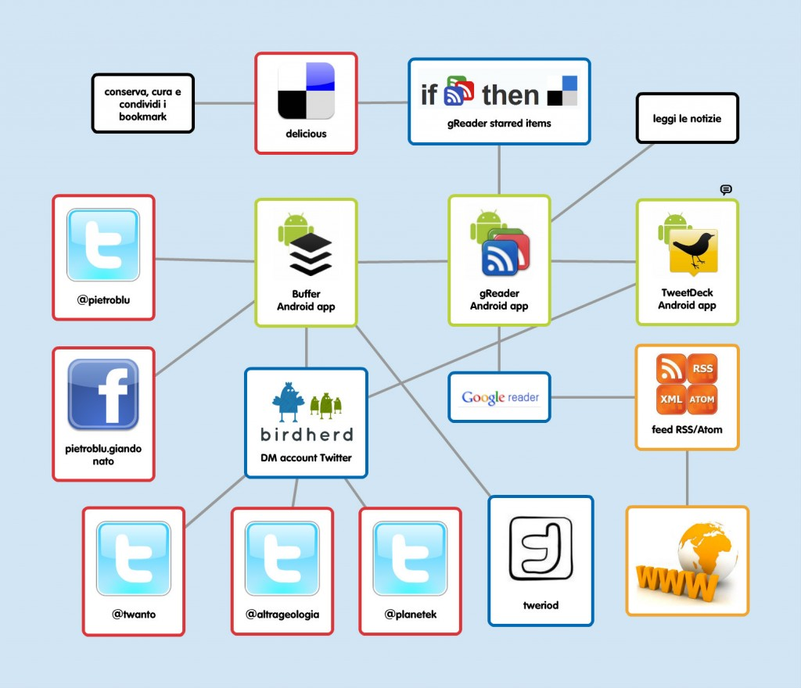

Archivio per la categoria ‘Entropia’
19 gennaio, 2012 | di Sergio Farruggia
Quest’avventura ha ancora pochi mesi di vita, ma vale già la pena di essere raccontata. Tutto è nato da una mail ricevuta lo scorso maggio: “Ti scrivo perché con i colleghi, abbiamo deciso d’intensificare la collaborazione con alcuni siti blog del settore, aprendo il sito di GEOmedia a contributi diretti ed indiretti”. Seguì una chiacchierata telefonica, in cui si valutò interessante organizzare una teleconferenza con i corrispondenti blogger.
La riunione telefonica avvenne puntualmente un mese più tardi. Alfonso Quaglione –l’autore della mail- espose ai blogger invitati, tra cui noi di TANTO, le proposte della Rivista, per quale finalità erano nate, ecc. ecc. Si raccolsero le prime impressioni, i commenti e i contributi. Alcuni espressero perplessità; emerse anche qualche critica. Luglio e agosto passarono, ancora tra qualche scambio di email, per puntualizzare punti di vista e per precisare meglio i dubbi.
Tralascio di soffermarmi sui distinguo. Quanto esporrò nel seguito prese infatti le mosse dalla constatazione che -in generale- tutti gli interventi fossero legati da un fil rouge, esprimibile in forma di auspicio: “Possiamo e dobbiamo continuare a parlarne”. Tra le idee e i possibili obiettivi espressi nella prima riunione virtuale di giugno, certamente questi trovavano ampia condivisione:
- portare i temi pi√π importanti dell’informazione geografica anche all‚Äôattenzione dei non addetti ai lavori
- creare un network dell’informazione geografica.
Valeva quindi la pena provare a fertilizzare questo dialogo, innescato dall’apprezzata rivista di geomatica, cercando occasioni per collaborare in quella direzione condivisa, ripromettendosi di operare per attrarre l’attenzione e l’interesse di chi –singole persone e aggregazioni- ne avesse approvato le finalità.
E’ a questo punto che entra in scena “Stati Generali dell’Innovazione” –SGI. I promotori di questa iniziativa –di cui su TANTO abbiamo scritto ormai in diverse occasioni (leggi qui e qui)- erano impegnati negli stessi mesi nell’organizzazione di un evento che richiamasse la partecipazione di tutti i portatori d’interesse verso la costruzione di una prospettiva condivisa per un cambio effettivo nella politica dell’innovazione per l’Italia.
In sintesi, le cose sono andate così.
SGI è un’associazione –ha anche uno statuto- ma si presenta meglio come una rete di associazioni, organizzazioni, enti, gruppi e persone singole, unite da uno scopo ben preciso: “Fornire contributi alla classe dirigente per attuare scelte rivolte alla realizzazione di un sistema di innovazione diffusa, un’innovazione che nasca dalle comunità e che al benessere delle comunità, in quanto reti relazionali, economiche e sociali, sia principalmente rivolta.”
Prendere parte alle attività di SGI è semplice e ci si può coinvolgere in modi diversi, con impegno differente: puoi visitare la pagina o iscriverti al gruppo FB; puoi seguire l’iniziativa su Twitter (@SGInnovazione); si può prendere parte alle discussioni avviate sui forum aperti sul sito dell’associazione, puoi restare connesso utilizzando gli RSS, iscriverti alla mailing-list; puoi aderire all’iniziativa, associarti -come organizzazione o singolo-, insomma i canali per ricevere informazioni e comunicare le proprie idee non mancano.
E’ sembrato –non a tutti, ma a più d’uno- il contesto appropriato per provare a individuare e proporre argomenti e idee riguardanti l’Informazione Geografica che –per il loro valore o per le interconnessioni con altri temi- destino attenzione all’interno di tale costituenda comunità e, per questa strada, vedere anche se potesse formarsi almeno un ordito di ciò che potrebbe poi diventare una rete geomatica “costituita dal basso”.
Così, “zitti zitti, piano piano”, senza fare confusione… un gruppetto di geomatici si è affacciato a SGI. Il primo –atteso- incontro pubblico ha avuto luogo il 25 e il 26 novembre scorsi. Come ho raccontato qua, l’esperienza è stata più che positiva: una conferma sia del clima partecipativo e collaborativo che traspariva già in Rete, sia di come i temi dell’Informazione Geografica possano essere accolti, recepiti e apprezzati in un contesto ICT generale e inquadrato sui contributi che tutti possiamo dare per raggiungere gli scopi per cui SGI è stata costituita.
La rete si sta formando
Il convegno di fine novembre è stato solo l’inizio, un buon inizio –scrivono gli organizzatori- per gli Stati Generali dell’Innovazione. L’esito, infatti, in termini di adesioni, partecipazione, temi affrontati e conclusioni a cui si è pervenuti, pongono già questa “meta-associazione” quale realtà con cui chi governa potrà confrontarsi e una risorsa per tutti coloro che vogliono produrre un vero cambiamento nelle politiche  dell’innovazione del nostro Paese.
Il “gruppetto” nato grazie alle discussioni estive di cui vi ho raccontato, ha continuato a dialogare in Rete, si è un poco rafforzato e ha iniziato a interagire all’interno degli Stati.
SGI sta alacremente costruendo una roadmap per il 2012, la roadmap dell’Italia che innova. E’ stata già formalizzata la Consulta Permanente degli SGI, sono avviate attività sui temi principali e più urgenti individuati; si sta definendo un calendario di eventi per portare il confronto degli SGI su tutto il territorio nazionale e altro ancora.
Consultando le otto schede, per altrettante azioni, messe a punto nel corso dell’incontro di novembre, possono affiorare molti argomenti legati o affini alle tematiche dell’Informazione Geografica. Stati Generali dell’Innovazione offre quindi la possibilità di entrare in contatto con soggetti che assumono intrinsecamente l’IG quale componente delle risorse che possono contribuire all’innovazione del Paese. Un’opportunità nuova per cooperare nella promozione delle istanze del nostro settore,  condividendo esigenze comuni. Per esempio, alcuni aspetti legati allo sviluppo delle Infrastrutture di Dati Territoriali a livello sub-nazionale si possono pienamente approfondire anche nell’ambito di un programma per promuovere il federalismo digitale, com’è stato articolato nella scheda “Inclusione digitale – Azione 1”. Così pure, non riesco a pensare a un programma che persegua il modello delle smart cities (scheda “Creatività e conoscenza condivisa РAzione 2”), senza “smart geo-data e smart geo-services”. Oppure ancora: quali contributi possono dare i geomatici rispetto al mutamento di modello di governance del settore pubblico, all’Open Government?
Vi sono processi in corso per cui potrebbe essere deleterio e controproducente lavorare a compartimenti. Credo sia allora un’opportunità quanto proposto dal programma per rendere pubblici e in formato aperto i dati della Pubblica Amministrazione (scheda “Open Government РAzione 1”). Sarebbe assai curioso non trovare visi noti al Tavolo di lavoro sugli Open Data che verrà costituito nei prossimi mesi.
Un’ultima annotazione: come sempre, in questi primi giorni del 2012 le associazioni del nostro settore, così come enti e varie organizzazioni, sono certamente già impegnate nella preparazione di convegni, workshop, seminari con finalità tecnico-scientifiche, per promuovere progetti, con scopi divulgativi. Per alcuni temi e in alcune circostanze, verificare sinergie con SGI, verificare se vi possono essere motivi di arricchimento per la road map “dell’Italia che innova”, potrebbe generare valore per l’iniziativa in corso di programmazione. Ugualmente, la geo-rete ipotizzata può essere portatrice di contributi geomatici nell’ambito di eventi organizzati da SGI e suoi associati.
 Fin qui l’attività di “apri-pista” che abbiamo svolto. L’idea iniziale degli amici di GEOmedia ha innescato un dibattito certamente utile. Se la partecipazione a Stati Generali dell’Innovazione che vi ho presentato sarà apprezzata e vedrà l’aggregazione e il coinvolgimento di altri attori della geomatica -associazioni, professionisti,  blogger, imprenditori, …- essa sarà un segno di novità (di innovazione?) nell’ambito del nostro settore. SGI consente di presentare propri contributi, secondo gli interessi, la sensibilità, le esigenze di cui ognuno è portatore, per elaborare in modo condiviso e attraverso un processo inclusivo un programma per “l’innovazione nel governo dell’Italia”, come risultato complessivo degli Stati Generali dell’Innovazione.
Fin qui l’attività di “apri-pista” che abbiamo svolto. L’idea iniziale degli amici di GEOmedia ha innescato un dibattito certamente utile. Se la partecipazione a Stati Generali dell’Innovazione che vi ho presentato sarà apprezzata e vedrà l’aggregazione e il coinvolgimento di altri attori della geomatica -associazioni, professionisti,  blogger, imprenditori, …- essa sarà un segno di novità (di innovazione?) nell’ambito del nostro settore. SGI consente di presentare propri contributi, secondo gli interessi, la sensibilità, le esigenze di cui ognuno è portatore, per elaborare in modo condiviso e attraverso un processo inclusivo un programma per “l’innovazione nel governo dell’Italia”, come risultato complessivo degli Stati Generali dell’Innovazione.
Posted in Entropia | 4 Comments »
10 gennaio, 2012 | di Pietro Blu Giandonato
Il “sottotitolo” di TANTO, così come concepito da Andrea ormai più di 6 anni fa, è “le cose che ci piacciono”. Nel nostro blog ormai scriviamo quasi esclusivamente di geomatica, intesa in tutte le sue accezioni, e in verità ero piuttosto scettico se pubblicare questo articolo proprio su TANTO. Ma poi mi sono ricordato che Gerlando aveva narrato la sua esprienza di comunicatore sempre qui, nel non molto lontano 2009. E del resto si tratta sempre di entropia, che tra l’altro è la categoria più numerosa dei nostri post.
Un impulso ulteriore a decidere di pubblicarlo qui (attenzione, prima ancora che una redazione noi siamo un gruppo di amici, quindi le decisioni le prendiamo sempre di comune accordo, compresa la scelta degli articoli) è stato il recente lancio di Planet GIS Italia, che mi ha “costretto” a sostituire in Google Reader il feed di Blog GIS Italia v. 3 proprio con quello nuovo di zecca di PGI.
Andiamo al dunque…
Una delle nostre necessità primarie quotidiane è informarci. Lo facciamo in molti modi differenti, da molte fonti differenti, su molti media differenti.
La radio ad esempio ci può accompagnare in svariati momenti della giornata. Per me è irrinunciabile ad esempio la mattina ascoltare su Rai Radio 3 Prima Pagina, e quando posso Radio3 Scienza, Tutta la città ne parla o ancora la trasmissione di Oscar Giannino su Radio24. Per fortuna ci sono i podcast, per ascoltare le puntate che ci perdiamo.
Ma quando si parla di blog, siti web, liste e gruppi di discussione, allora le cose diventano più complicate. Bisogna dedicargli del tempo, stando davanti al computer, o anche sullo smartphone, sebbene il piccolo schermo metta a dura prova le nostre diottrie e il touchscreen la pazienza delle nostre dita. Comunque sia, si tratta di tempo che viene ritagliato durante le nostre giornate incasinate, tra lavoro e impegni familiari.
Voglio qui condividere la mia esperienza di come ho organizzato quell’oretta in totale che riesco a dedicare a questa fondamentale, irrinunciabile parte della giornata.
Per domare le decine e decine di feed RSS ai quali sono abbonato, ma soprattutto non cadere nel panico dovuto ai 1.000 e passa nuovi item quotidiani che essi generano, uso da anni ormai Google Reader. A mio avviso, nonostante con l’ultima revisione Google lo abbia menomato pesantemente, eliminando la possibilità di condividere con i propri contatti le nostre letture e dirottando il traffico su Google Plus Рche per inciso non m’ha preso e forse mai mi prenderà -, io lo trovo ancora il miglior strumento web per leggere in maniera organica i feed.
Naturalmente, molte delle cose che troviamo interessanti le condividiamo spontaneamente con i nostri contatti – una volta anche su Google Reader – via email, su Twitter, Facebook, Linkedin e ogni altro sistema sociale che frequentiamo.
Devo per√≤ fare un inciso fondamentale, ormai espleto circa il 50% delle mie attivit√† digitali quotidiane (tra le altre consultare email, navigare sul web, gestire gli impegni, usare i social network, e ovviamente informarmi) sul mio smartphone. L‚Äôaltro 50% del lavoro – su PC – riguarda l‚Äôuso di GIS, la scrittura di documenti di lavoro e di articoli per i blog, pi√π altre attivit√† ‚Äúpesanti‚Äù meno ricorrenti. Essermi organizzato su piattaforma mobile mi consente di non rimanere ogni sera dalle 2 alle 3 ore davanti al computer per organizzare il lavoro (email, programmazione attivit√†, ecc.), sacrificando il resto delle ancora pi√π importanti attivit√† sociali: dedicarsi alla famiglia, agli amici… e a s√© stessi.
Il mio workflow informativo 2.0 parte dunque da Google Reader, nel quale butto qualunque feed RSS, dai siti web, ai blog, alle mailing list che non frequento assiduamente, finanche ai Pipes di Yahoo che uso per fare piccoli ‚Äúmashup informativi‚Äù, come¬†questo¬†che si basa su¬†quest’altro. Ma ovviamente mi avvalgo di una serie di applicazioni sia mobili che web per ottimizzare al massimo il tutto.
Per esprimervi in maniera chiara il workflow che ho messo a punto, e in modo sistemico i link tra le varie applicazioni da me utilizzate, ho creato una semplice mappa mentale con il fantastico servizio web popplet. La vedete qui sotto.

Gli strumenti del mestiere…
Descriver√≤ ora gli attrezzi con i quali ho costruito il workflow, si tratta di tre applicazioni per Android e altrettanti servizi web. Si potrebbe costruire un processo analogo anche su piattaforma iOS – suggerisco infatti allo scopo alcune app alternative – ma francamente non so quanto potrebbe funzionare, visto che sul sistema operativo mobile Apple manca una delle “funzioni killer” invece da sempre disponibile su Android: l’onnipresente menu “share”. Con esso √® infatti possibile inviare qualunque contenuto ad altre applicazioni, consentendo una piena interoperabilit√† tra di esse.
• gReader • applicazione Android Рfree
A mio avviso √® un lettore di Google Reader molto migliore dell‚Äôapplicazione di Big G; possiede molte pi√π funzioni, tra le quali la customizzazione dell‚Äôinterfaccia, ma ovviamente √® una questione di gusti. Ecco come lo uso. Quando trovo un item cos√¨ interessante da volerlo leggere pi√π tardi, in genere vorrei anche metterlo tra i miei bookmark, perci√≤ lo invio al mio account delicious. Per fare questo mi √® sufficientemente marcarlo ‚Äústarred‚Äù, e un‚Äôapposita ‚Äúricetta‚Äù che ho creato sul servizio web ifttt¬†(descritto oltre) preleva il flusso dei miei starred item e li trasforma in bookmark su delicious, taggandoli con ‚Äúifttt‚Äù, ‚Äúgooglereader‚Äù e ‚Äúnome_feed‚Äù. Periodicamente vado a ‚Äúcurare‚Äù questi bookmark su delicious, li leggo e se ne vale la pena li conservo, taggandoli opportunamente e magari mettendoli in uno stack. C’√® anche il modo di conservare – sempre su delicious – le letture in maniera privata, marcandole con un apposito tag, qui la ricetta su iftt. Quando invece¬†una lettura mi sembra degna di condivisione, se voglio twittarla subito¬†la mando a¬†Tweedeck (vedi pi√π avanti) mediante il menu “share” di Android, altrimenti a¬†Buffer (ne parlo dopo) se voglio programmarne la diffusione su Twitter o Facebook in orari differenti.
Input: feed RSS. Output: starred items verso Delicious, shared verso Tweetdeck o Buffer.
Alternativa iOS: Feeddler
• Buffer • applicazione Android e servizio web - freemium
Si tratta di un formidabile servizio basato su web che consente di creare uno stack di tweet e aggiornamenti Facebook programmabili ad orari definiti dall‚Äôutente. La sua versione free consente di gestire fino a 3 distinti account Twitter e/o Facebook e di pubblicare fino a 10 elementi al giorno. Poich√® (co)gestisco diversi account Twitter, riesco ad aggirare questo limite mediante BirdHerd, un ulteriore servizio sempre basato su web del quale parler√≤ pi√π avanti. Buffer mette a disposizione anche un‚Äôapp Android – sempre free – integrata nel fantastico menu “share” di Android, che consente di gestire lo stack editando i singoli elementi precedentemente creati e il¬†loro ordine di pubblicazione.
Input: shared da gReader. Output: verso i miei account Twitter e Facebook, verso BirdHerd via DM.
Alternativa iOS: Buffer
• Tweriod • servizio web - freemium
Per usare al meglio Buffer e programmare i tweet e gli aggiornamenti in modo tale da ottenere la massima attenzione dai nostri follower, ci viene in supporto Tweriod. Si tratta di un servizio web in grado di analizzare l’attività degli account di chi ci segue su Twitter e da ciò suggerirci le fasce orarie migliori per pubblicare i nostri tweet, affinché ottengano la massima visibilità. Per ottenere l’analisi sarà sufficiente loggarsi a Tweriod con l’account Twitter dal loro sito web.
Input: account Twitter. Output: fasce orarie ottimali per twittare.
• Tweetdeck • applicazione Android e servizio web Рfree
A mio avviso il miglior client per Twitter Рconsente di postare anche su Facebook Рin circolazione. Potentissime le sue funzioni, tra le quali cito ad esempio la possibilità di gestire svariati account Twitter e cinguettare lo stesso messaggio anche da più di uno, scheduling dei tweet, possibilità di gestire alert differenti per le singole colonne (le timeline degli account, degli hashtag, delle ricerche, delle citazioni). Che si può desiderare di più?
Input: da gReader.  Output: account Twitter o Facebook.
Alternativa iOS: Tweetdeck.
‚Ä¢¬†ifttt ovvero “if this then that” ‚Ä¢¬†servizio web – free
Si tratta di una geniale applicazione web che consente di “mettere internet al lavoro per te”, parafrasando il loro slogan. Permette di interconnettere numerosi canali web, tra i quali proprio Google Reader, Buffer, delicious, Twitter, e feed RSS, ma la lista aumenta sempre pi√π. Descriverlo qui sarebbe riduttivo, vi invito vivamente ad aprire un account e dare spazio alla fantasia. In questo contesto, io lo uso come gi√† anticipato per creare dei nuovi bookmark in delicious¬†dagli item starred di Google Reader.
Input: da Google Reader. Output: verso delicious.
• BirdHerd • servizio web Рfree (per ora)
@aborruso molto tempo fa introdusse noialtri TANTI all’uso di BirdHerd per aggiornare direttamente dai nostri rispettivi account Twitter quello di TANTO (@twanto). Una volta loggati su BirdHerd con l’account Twitter di gruppo, è possibile aggiungere i “contributori” (fino a un massimo di 10) ciascuno dei quali sarà poi in grado di pubblicare i tweet semplicemente inviando un DM all’account di gruppo stesso. Il messaggio verrà infine twittato, completato alla fine dalla firma del contributore. Qui un esempio. Quando dunque da gReader trovo un link interessante che voglio twittare come @twanto o @planetek o @altrageologia, mi sarà sufficiente mandare ai rispettivi account un DM con Tweetdeck o Buffer, il resto verrà da sé.
Input: da Buffer o Tweedeck. Output: verso account Twitter di gruppo.
In conclusione, chi come me consuma gran parte delle informazioni su piattaforma mobile, costruendo un workflow ben congegnato pu√≤ al tempo stesso informarsi in maniera dinamica nell‚Äôarco della giornata (es. tempi morti durante le attese), condividere le cose ritenute pi√π interessanti con i propri follower sui social network e conservarle sempre in maniera sociale con delicious. Tutto direttamente dal nostro smartphone, che la sera – assieme al PC – potremo tenere spento, e dedicarci alle altre cose – non digitali – che ci piacciono TANTO…
Posted in Entropia | No Comments »
26 settembre, 2011 | di Lorenzo Perone
Questo post nasce a seguito della sollecitazione a descrivere le modalit√† con cui abbiamo elaborato il modello per l’individuazione della rete strategica in condizioni di esercizio. E’ la naturale continuazione del mio precedente ‚ÄúDefinizione di una rete stradale strategica di ambito provinciale‚Äù che invito a leggere per maggiore chiarezza, in quanto alcuni passaggi comuni alle due analisi sono stati descritti nel primo post con maggiore dettaglio.
Ricordo comunque, a titolo di completezza, alcuni concetti generali.
Lo scopo dell’analisi è stato quello di definire, all’interno dei 1400 Km della rete viaria della Provincia di Bologna, tre categorie di importanza funzionale indicative della rilevanza strategica di un tronco stradale.
La definizione di una rete strategica è finalizzata a garantire un livello di servizio dell’infrastruttura stradale adeguato alla sua funzione, a programmare e gestire la manutenzione dell’infrastruttura stradale sul territorio provinciale in maniera mirata e a ottimizzare le risorse disponibili per gli interventi definendo priorità e fornendo supporto nella definizione dei piani triennali dei lavori.
L’individuazione della rete strategica viene effettuata tenendo conto di due diversi scenari:
-
scenario di servizio: valuta la funzionalità richiesta all’infrastruttura in condizione di normale esercizio;
-
scenario di emergenza: valuta la funzionalità richiesta all’infrastruttura nella condizione di emergenza legata ad un evento sismico.
Nel caso dell’analisi in condizioni di esercizio si è tenuto conto dei flussi di traffico e lo studio dei percorsi (routing) ha valutato i percorsi tra centroidi di attrazione e generazione di spostamento secondo la relazione residenti-edificato, residenti-imprese e caselli autostradali-edificato.
L’analisi GIS utilizza:
- una mappa di densità dei residenti ottenuta dal dato geometrico dalle sezioni di censimento ISTAT;
- una mappa di densità delle imprese ottenuta della banca dati della Camera di Commercio georeferenziata;
- una mappa di densità dell’edificato ricavata secondo quanto descritto in questo post.
Queste mappe raster vengono filtrate utilizzando un valore minimo di soglia che permetta di identificare un numero di “isole” ritenuto rappresentativo del contesto provinciale mediante un‚Äôanalisi qualitativa. Di queste isole vengono poi calcolati i baricentri passando per la trasformazione in poligoni. I baricentri, assieme agli accessi ai caselli autostradali, rappresentano i centroidi dell’analisi dei percorsie sono costituiti da:
- 48 centroidi di aree ad elevata densità residenziale, ottenuti elaborando le sezioni relative all’ultimo censimento della popolazione, che definiremo centroidi residenti
- 61 centroidi di aree densamente edificate, ottenuti elaborando la densità edilizia calcolata dai dati catastali secondo la metodologia proposta da questo post, che definiremo centroidi edificato
- 46 centroidi di aree ad elevata presenza di imprese ottenuti elaborando i dati della Camera di Commercio di Bologna georiferiti, che definiremo centroidi imprese
- 24 accessi ai caselli autostradali
Individuati i centroidi di generazione/attrazione degli spostamenti vengono definite nel modello le regole secondo le quali il software deve calcolare i percorsi di collegamento che sono rappresentati dalla seguente matrice.
|
Centroidi edificato
|
Centroidi imprese
|
| Centroidi residenti |
5C/TB
|
5C/TB
|
| Caselli autostradali |
1C/TB
|
-
|
Per ogni relazione è espresso un parametro di calcolo utilizzato dall’algoritmo di routing del software:
-
1C, 5C numero di connessioni del centroide di generazione degli spostamenti con i più prossimi punti di attrazione degli spostamenti, es. tra centroidi residenti e centroidi edificato e è indicato 5C, cioè il centroide di ogni area ad elevata densità residenziale deve raggiungere il centroide delle cinque aree densamente edificate più prossime.
-
TB calcolo del percorso utilizzando il percorso pi√π breve in termini di tempo.
Ad ogni arco stradale √® attribuito un peso basato sul numero dei percorsi, tra quelli calcolati, che lo utilizzano, la parte relativa al calcolo dei percorsi a questo punto √® conclusa. Si opera l’estrazione del grafo delle strade provinciali dal grafo complessivo.
Oltre ai percorsi, per il calcolo della categoria di importanza funzionale, in condizioni di esercizio, delle strade provinciali, sono utilizzati anche i dati sui flussi di traffico che provengono da Mobiliter, il sistema di consultazione dei flussi online della regione Emilia-Romagna. I dati forniti sono rilevati da circa 40 postazioni, in funzione 24 ore su 24, installate sulle strade provinciali. Questi dati di flusso sono integrati dai dati rilevati in fase di definizione del quadro conoscitivo del Piano della Mobilità Provinciale.
I dati relativi ai flussi di traffico sono stati inseriti come attributi nel grafo provinciale a livello di singolo arco stradale. Sono state individuate tre classi di traffico attraverso un’analisi di significatività statistica (Jenks). La scelta dei valori di soglia, operata secondo questo metodo, consente di determinare classi di aggregazione (classe 1, 2 e 3) con i valori di gruppo più simili e che massimizzano le differenze tra le classi stesse.
Il calcolo dell’indice di importanza funzionale, basato sulle classi di traffico e sul peso determinato dall’analisi dei percorsi, √® stato effettuato in maniera diversificata tra le strade di pianura e quelle collinari o montane. Si √® operata una distinzione basata sulla definizione geografica di pianura come territorio compreso al di sotto della quota di 200 m s.l.m. Lo scopo di questa differenziazione, che si traduce nella creazione di due sub-grafi, √® quello di amplificare l’importanza funzionale delle strade appenniniche, cio√® quelle poste a 200 m s.l.m., che presentano in termini di flussi di traffico un’importanza spesso secondaria. Tale scelta si √® concretizzata nel calcolo dell’indice di importanza funzionale che segue la logica di seguito descritta.
|
Peso dell’analisi dei percorsi
|
Peso dei flussi di traffico
|
|
Ambito di pianura
|
40%
|
60%
|
|
Ambito appenninico
|
60%
|
40%
|
Una volta calcolato l’indice di importanza funzionale nel contesto di pianura ed in quello appenninico si pu√≤ riunificare il grafo. L’indice di imporanza funzionale che ogni arco si trova come attributo viene normalizzato a 100 e vengono individuate tre categorie di importanza funzionale mediante l’analisi di significativit√† statistica di Jenks.
Quello che si ottiene è un grafo che presenta per ogni singola strada provinciale diversi tratti con categoria di importanza funzionale diversa. Con un’analisi qualitativa si operano delle scelte per attribuire le categorie di importanza funzionale in maniera più continua ad interi tratti di strada.
- Mappa dei percorsi in Appennino
Scenario dei percorsi in Appennino
- Mappa del traffico in Appennino
Mappa del traffico in Appennino
- Mappa della rete strategica in Appennino

Mappa della rete strategica in Appennino
- Mappa dei percorsi in pianura
Mappa dei percorsi in pianura
- Mappa del traffico in pianura
Mappa del traffico in pianura
- Mappa della rete strategica in pianura
Mappa della rete strategica in pianura
Un’illustrazione interessante pu√≤ essere quella di un utilizzo “pratico” della rete strategica in condizioni di esercizio quale la valutazione dell’indice di equilibrio nell’attivit√† di pulizia della neve. Si calcola per ogni arco stradale l’indice di servizio, cio√® il rapporto tra il numero dei mezzi ed il percorso assegnato (es. 1 mezzo / 15 Km = 0.067). Il valore dell’indice di servizio, attraverso l’analisi di significativit√† di Jenks, viene classificato in tre classi: massimo (classe 1), medio (classe 2) e minimo (classe 3) servizio. Successivamente per ogni arco si confronta la classe di servizio con la categoria di importanza funzionale in condizioni di esercizio. Gli scenari possibili sono i seguenti.
|
Classe servizio 1
|
Classe servizio 2
|
Classe servizio 3
|
| Cat. importanza funzionale 1 |
Indice servizio equilibrato
|
Indice servizio basso
|
Indice servizio molto basso
|
| Cat. importanza funzionale 2 |
Indice servizio alto
|
Indice servizio equilibrato
|
Indice servizio basso
|
| Cat. importanza funzionale 3 |
Indice servizio molto alto
|
Indice servizio alto
|
Indice servizio equilibrato
|
La mappa dell’indice di equilibrio risultante √® la seguente.
Mappa dell'indice di equilibrio nella pulizia neve
Spero di essere riuscito nell’intento di esemplificare il flusso di lavoro seguito. Invito chi possa essere interessato all’argomento a contribuire, chiedere informazioni o criticare utilizzando i commenti 
Posted in Entropia | No Comments »
19 settembre, 2011 | di Andrea Borruso
In questo post parlerò un po’ di TANTO, dei suoi autori e di come stanno insieme. Non sarà un contributo dei “nostri”, ma è in un certo senso necessario.
A giugno del 2011 questo spazio ha festeggiato il suo sesto compleanno e, come ho detto in altre occasioni, non avrei nemmeno immaginato di arrivare alla prima candelina; figuriamoci la sesta. Ogni anno, in corrispondenza della ricorrenza, vorrei sempre scrivere un post celebrativo, perch√© mi piacciono le cerimonie e soprattutto i rituali, perch√© fanno ‚Äúun giorno diverso dagli altri giorni, un’ora dalle altre ore‚Äù. Ma non sono quasi mai riuscito a rispettare le date; almeno quelle ufficiali.
Per (mia) fortuna, almeno una volta all’anno, per una ragione o per un’altra, viene sempre un momento, in cui riesco a fissare sulla “nuvola” alcuni pensieri su questo cammino iniziato più di sei anni fa.
Non vi parler√≤ di TANTO come blog, delle sue statistiche di accesso, delle soddisfazioni professionali e personali che ci siamo tolti utilizzandolo come interfaccia con il mondo esterno. Non √® poco, ma √® riduttivo rispetto a quanto gli autori di TANTO hanno acquisito e costruito insieme: essere soprattutto una (piccola e sgangherata) comunit√†, un insieme di persone che hanno comunione di vita sociale (purtroppo soprattutto virtuale) e che condividono alcuni comportamenti e interessi. In questa ho avuto l’opportunit√† di crescere professionalmente e soprattutto umanamente, e continuo sempre a stupirmi di quanto siano robuste le cose che ci uniscono e di quanto mi stimolino quelle che ci dividono.
In questi sei anni siamo cresciuti in numero,  soprattutto siamo diventati un gruppo più sano e più maturo. Questo stato di salute ci da l’opportunità di avere una certa facilità nel creare bei rapporti con le persone, perché il benessere e il benestare sono in qualche modo contagiosi e magnetici. E anche noi siamo ovviamente sensibili al magnetismo.
Una di queste persone, con la quale da diverso tempo in qualche modo ci specchiamo, quest’estate Рparlando della sua azienda Рci ha scritto:
L‚Äôho costruita con questa idea, la condivisione, la libert√† e il rispetto. Nella speranza di costruire una rete di persone delle quali fidarsi. Che non si muovano solo per una fattura, ma anche per un “bene” comune, senza pressioni, ognuno dando quello che sa fare meglio, quando pu√≤. E ancora oggi, nello scriverlo, sembra una cosa cos√¨ semplice. E’ per quello che ci credo. E’ un “motto” semplice e incredibilmente potente.
Non si “vive” di queste frasi, ma incontrare questo tipo di persone, scambiare con loro idee e provare a creare insieme qualcosa di concreto, sicuramente fa stare meglio.
Abbiamo allora deciso di invitarla a fare parte della nostra tavola e ha accettato. Si tratta di Andrea Antonello e questo post vale anche come benvenuto ufficiale da parte di tutta la redazione.
Andrea non ha bisogno di presentazioni, è uno dei guru della geomatica italiana (e oltre), una “cintura nera” di Java, specializzato nello sviluppo di applicazioni spaziali. E’ il creatore (tra le altre cose) di JGrass e Geopaparazzi, ed uno dei soci di HydroloGIS.
Siamo in contatto da alcuni anni: al primo incontro “intenso” che abbiamo avuto (purtroppo soltanto una video conferenza di un’ora), mi colpì per una grandissima disponibilità e competenza. Con lui c’era la sua socia Silvia Franceschi, ed anche lei mostrò le medesime virtù.
In un post di alcuni fa in cui davo il benvenuto a Pietro, sostenevo che il successo di un Blog fosse avere un nuovo autore. Avere Andrea con noi sarà una grande risorsa per i nostri lettori, e quindi (per me) una conferma di questa tesi. Ma la cosa più bella, il successo che per ora mi sembra il più grande, è che questo gruppo ha creato le condizioni per cui tutto questo accadesse.
Tutto qui, poco, ma tanto.
Posted in Entropia | 6 Comments »
15 settembre, 2011 | di Lorenzo Perone
Questo post nasce dal mio desiderio di condividere e discutere un’approccio metodologico, in termini di analisi GIS, per me relativamente nuovo nell’ambito del mio lavoro presso il Servizio Manutenzione Strade della Provincia di Bologna. Il lavoro da cui è tratta la metodologia descritta in questo post è stato svolto a quattro mani con il mio collega Pierluigi Tropea le cui competenze in ambito strutturale e manutentivo, complementari alle mia esperienza in ambito GIS, ci hanno permesso di conseguire un risultato, secondo me, interessante.
Lo scopo dell’analisi è stato quello di definire, all’interno dei 1400 Km della rete viaria della Provincia di Bologna, tre categorie di importanza funzionale indicative della rilevanza strategica di un tronco stradale.
La definizione di una rete strategica è finalizzata a garantire un livello di servizio dell’infrastruttura stradale adeguato alla sua funzione, a programmare e gestire la manutenzione dell’infrastruttura stradale sul territorio provinciale in maniera mirata e a ottimizzare le risorse disponibili per gli interventi definendo priorità e fornendo supporto nella definizione dei piani triennali dei lavori.
L’individuazione della rete strategica viene effettuata tenendo conto di due diversi scenari.
-
Scenario di servizio: valuta la funzionalità richiesta all’infrastruttura in condizione di normale esercizio.
-
Scenario di emergenza: valuta la funzionalità richiesta all’infrastruttura nella condizione di emergenza legata ad un evento sismico.
Le modalità utilizzate per definire la categoria di importanza funzionale di una strada variano a seconda dello scenario di analisi. Si parte in entrambi i casi dall’analizzare le densità di residenti, edificato ed imprese. Nel caso dello scenario di emergenza le densità vengono amplificate in base ad una funzione esponenziale di pericolosità sismica definita sul territorio attraverso l’accelerazione sismica di picco al suolo e la probabilità di superamento di un determinato sisma di riferimento.
Lo scopo di questa amplificazione è tenere conto del maggiore danno atteso in aree a maggiore sismicità potenziandone virtualmente i recettori di soccorso.
Nel caso dello scenario di esercizio si tengono in considerazione anche i flussi di traffico e l’analisi dei percorsi (routing) valuta i percorsi tra centroidi di attrazione e generazione di spostamento secondo la relazione residenti-edificato e residenti-imprese. La metodologia per individuare i centroidi analizzati in questo scenario è la medesima di quella sotto riportata per lo scenario di emergenza.
L’analisi GIS utilizza una mappa di densità dei residenti ottenuta dal dato geometrico dalle sezioni di censimento ISTAT; una mappa di densità delle imprese ottenuta della banca dati della Camera di Commercio georeferenziata; una mappa di densità dell’edificato ricavata secondo quanto descritto in questo post. Queste mappe raster che sono amplificate dalla funzione di pericolosità sismica nel caso dello scenario di emergenza, vengono filtrate utilizzando un valore minimo di soglia che permetta di identificare un numero di isole ritenuto rappresentativo del contesto provinciale mediante un’analisi qualitativa. Di queste “isole” vengono poi calcolati i baricentri passando per la trasformazione in poligoni.
I baricentri rappresentano i centroidi della nostra analisi. Questi centroidi ed i punti che rappresentano l’ubicazione delle industrie a rischio rilevante sono, nell’analisi dei percorsi (routing), i punti verso i quali veicolare, attraverso il grafo stradale, i mezzi provenienti dai centri di offerta di soccorso.
Nel complesso l’analisi GIS, per lo scenario di emergenza, si articola in quattro punti.
Punto 1 РIndividuazione dei punti da cui, nel modello, si origina l’offerta di soccorso nel territorio provinciale a cui ho accennato poco sopra.
Punto 2 РIndividuazione dei recettori che fanno richiesta di soccorso che nel modello deve essere veicolato attraverso il grafo stradale che comprende l’intera rete stradale presente sul territorio provinciale.
-
48 centroidi di aree ad elevata densità residenziale, ottenuti elaborando le sezioni relative all’ultimo censimento della popolazione, che definiremo centroidi residenti
-
61 centroidi di aree densamente edificate, ottenuti elaborando la densità edilizia calcolata dai dati catastali secondo la metodologia proposta da questo post, che definiremo centroidi edificato
-
46 centroidi di aree ad elevata presenza di imprese ottenuti elaborando i dati della Camera di Commercio di Bologna georiferiti, che definiremo centroidi imprese
-
23 industrie a rischio rilevante
Punto 3 – Definite le origini e le destinazioni vengono definite nel modello le regole secondo le quali il software deve calcolare i percorsi di collegamento. Le relazioni variano a seconda dello scenario di riferimento analizzato, quelle utilizzate per lo scenario di emergenza sono rappresentate dalle seguente matrice.
|
Caserme dei Vigili del Fuoco |
Presidi opedalieri |
Caselli autostradali |
Interporto |
| Centroidi residenti |
2C/TB
|
2C/TB
|
1C/TB
|
1C/TB
|
| Centroidi edificato |
2C/TB
|
2C/TB
|
1C/TB
|
1C/TB
|
| Centroidi imprese |
2C/TB
|
2C/TB
|
1C/TB
|
1C/TB
|
| Industrie a rischio |
3C/TB
|
3C/TB
|
1C/TB
|
1C/TB
|
Per ogni relazione è espresso un parametro di calcolo utilizzato dall’algoritmo di routing del software:
-
1C, 2C, 3C numero di connessioni del centroide di richiesta di soccorso con i più prossimi punti di offerta di soccorso della relazione, es. tra industrie a rischio rilevante e presidi ospedalieri è indicato 3C, cioè un’industria a rischio deve essere raggiunta dai tre più prossimi presidi ospedalieri
-
TB calcolo del percorso utilizzando il percorso pi√π breve in termini di tempo
Il risultato è una mappa in cui ad ogni elemento (arco) del grafo stradale sono sovrapposti n archi stradali relativi ai percorsi calcolati secondo la logica descritta.

Percorsi di collegamento tra centroidi di offerta e ricezione di soccorso
La legenda dei percorsi tra punti di offerta di soccorso ed i recettori può essere così esplicitata.
Offerta di soccorso
PS presidi ospedalieri
VVF caserme dei Vigili del Fuoco
CS accessi ai caselli autostradali
IP interporto di Bologna
Recettore di soccorso
IR industrie a rischio rilevante
ED centroidi di aree densamente edificate
RR centroidi di aree ad elevata densità residenziale
AZ centroidi di aree ad elevata presenza di imprese
A questo punto, ad ogni arco stradale, viene attribuito un indice di importanza funzionale basato sul numero dei percorsi, tra quelli calcolati, che lo utilizzano. Il valore dell’indice è poi normalizzato a 100.
Punto 4 - Si stabiliscono delle classi di aggregazione di valore dell‚Äôindice di importanza funzionale. Sono state definite tre classi individuando i valori di soglia attraverso un‚Äôanalisi di significativit√† statistica (Jenks) dei valori dell’indice di importanza funzionale degli archi del grafo stradale. La scelta dei valori di soglia, operata secondo questo metodo, consente di determinare classi di aggregazione (categoria 1, 2 e 3) con i valori di gruppo pi√π simili e che massimizzano le differenze tra le classi stesse.
L’analisi operata fino ad ora ha preso in considerazione l’intero grafo stradale provinciale: autostrade, tangenziali, strade statali, strade provinciali e strade comunali. La “nostra” rete strategica deve contenere solo le strade provinciali che vengono quindi estratte dal grafo complessivo.
Quello che si ottiene è un grafo che presenta per ogni singola strada provinciale diversi tratti con categoria di importanza funzionale diversa. Con un’analisi qualitativa si operano delle scelte per attribuire le categorie di importanza funzionale in maniera più continua ad interi tratti di strada.

Rete strategica delle strade provinciali
La mappa sopra riportata rappresenta il risultato complessivo dell’analisi con la rappresentazione delle strade provinciali secondo le tre categorie di importanza funzionale:
-
categoria – massima importanza strategica
-
categoria – media importanza strategica
-
categoria – minima importanza strategica
da un punto di vista statistico il risultato è il seguente.

Statistica dei Km di strade provinciali per categoria
Le percentuali sono espresse in termini di Km sui 1400 km complessivi di strade provinciali.
Mi auguro che questo post possa essere di stimolo alla nascita di un confronto sulla metodologia utilizzata, cosa importante per evidenziare i punti di debolezza ed avere utili spunti.
Posted in Entropia | 2 Comments »


 Fin qui l’attività di “apri-pista” che abbiamo svolto. L’idea iniziale degli amici di GEOmedia ha innescato un dibattito certamente utile. Se la partecipazione a Stati Generali dell’Innovazione che vi ho presentato sarà apprezzata e vedrà l’aggregazione e il coinvolgimento di altri attori della geomatica -associazioni, professionisti,  blogger, imprenditori, …- essa sarà un segno di novità (di innovazione?) nell’ambito del nostro settore. SGI consente di presentare propri contributi, secondo gli interessi, la sensibilità, le esigenze di cui ognuno è portatore, per elaborare in modo condiviso e attraverso un processo inclusivo un programma per “l’innovazione nel governo dell’Italia”, come risultato complessivo degli Stati Generali dell’Innovazione.
Fin qui l’attività di “apri-pista” che abbiamo svolto. L’idea iniziale degli amici di GEOmedia ha innescato un dibattito certamente utile. Se la partecipazione a Stati Generali dell’Innovazione che vi ho presentato sarà apprezzata e vedrà l’aggregazione e il coinvolgimento di altri attori della geomatica -associazioni, professionisti,  blogger, imprenditori, …- essa sarà un segno di novità (di innovazione?) nell’ambito del nostro settore. SGI consente di presentare propri contributi, secondo gli interessi, la sensibilità, le esigenze di cui ognuno è portatore, per elaborare in modo condiviso e attraverso un processo inclusivo un programma per “l’innovazione nel governo dell’Italia”, come risultato complessivo degli Stati Generali dell’Innovazione.